CMC Gunnar FAQs
Frequently Asked Questions
I am using the Gunnar integration with FrameReady and I have selected the Gunnar Mat Creator option, as well as selected a template for the Work Order I want to push into Gunnar. When the Gunnar Mat Creator software opens, I do not see my mat design project on the screen. I just see a yellow box in the bottom left hand corner of the screen?
-
When the FrameReady/Gunnar integration pushes the information from FrameReady into the Gunnar Mat Creator program, it starts the design on the screen in a weird place.
In order to open the design in its fullness to edit it, double-click the yellow box (bottom left hand corner). The design opens in full view on the Mat Creator program and you will be able to see all the measurements in the left hand corner and the template opening etc.
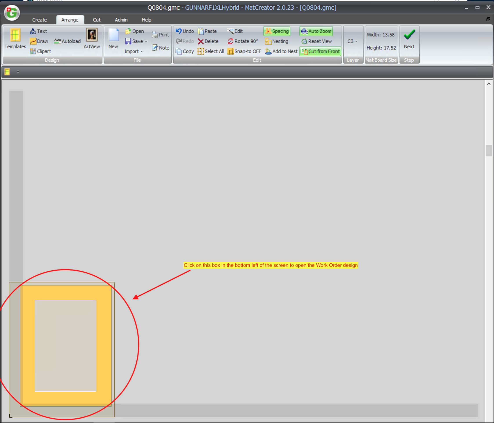
-
After you click the yellow box (bottom left hand corner), then the design appears in full view, like the image below, with the template cut that you selected in FrameReady as well as the measurements.
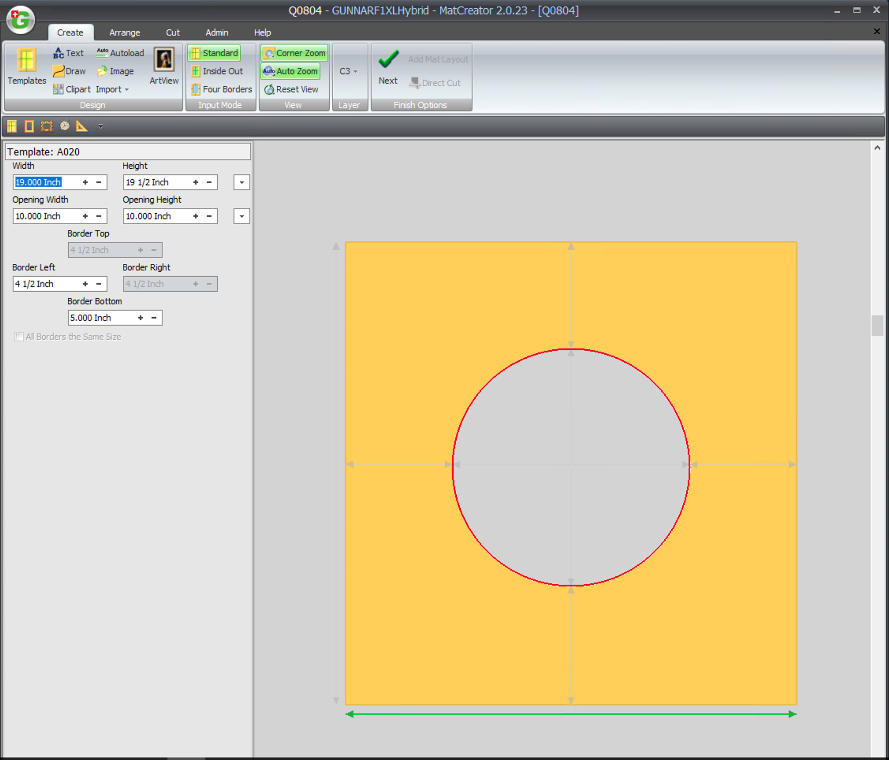
I am using the Gunnar integration with FrameReady and I am trying to generate a design from a Work Order to push into Gunnar Mat Creator. When I click the CMC button and select a template design, I get an error that says “(work order number.gmc) could not be created on this disk. Use a different name, make more room on this disk, unlock it or use a different disk.”
-
This error typically happens when you have not yet created the “FMGMC” folder on your C:/ drive on your Windows machine or in the Macintosh HD/Library folder on your MAC.
Follow the CMC Gunnar instructions to guide you through how to create this folder. Also, make sure that when you create the “FMGMC” folder, you set the permissions for the folder as Read/Write so that FrameReady can save the .gmc files to the folder.
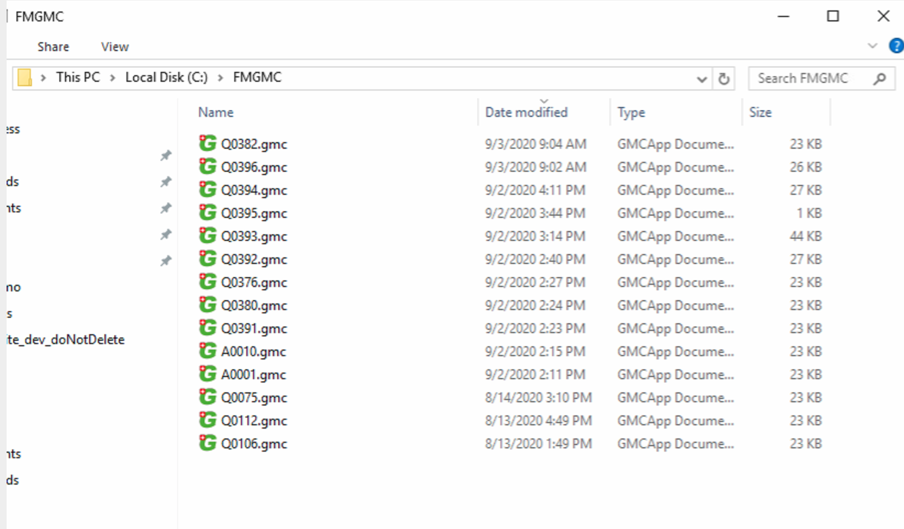
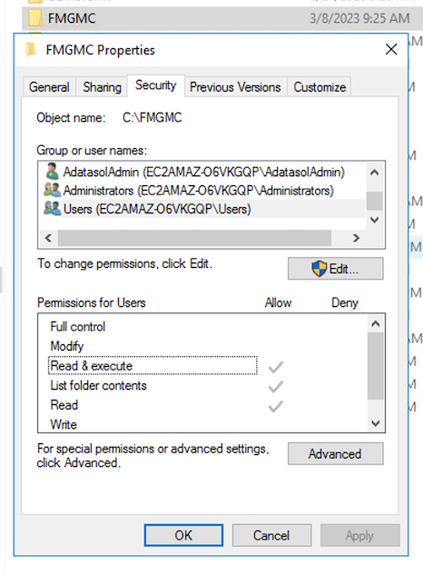
I am using the Gunnar integration with FrameReady and I am setting prices in the price section of the integration. I have used the button “Add Template” to add my own template for pricing purposes to the Gunnar integration pricing. Why is the template setting itself as an Oval when it opens in the Gunnar Mat Designer program?
-
The “Add Template” button in Gunnar in strictly for pricing purposes in FrameReady. The integration will push the opening size and margins and measurements into Gunnar mat Designer but it does not have a template design for the custom template that you have created in the pricing section. This is why the Oval design template is generating in Gunnar Mat Designer for this particular custom template you have created. The Oval template is the default template that is being set by the integration for the custom created pricing templates. You can set the template design top a different design in Gunnar Mat Designer once the project has been opened by using the template selector in the left hand side of Gunnar Mat Designer.
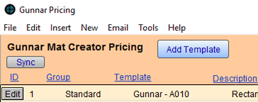
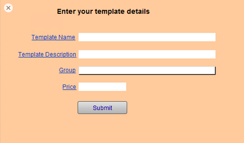
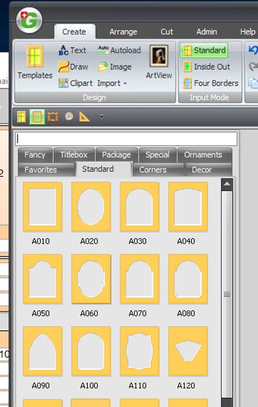
I am using the Gunnar integration with FrameReady and I am attempting to create an “Autoload” batch file to open in Gunnar Mat Designer. However, when I perform the find to find all of my Gunnar Work Orders in FrameReady and then select the “Create Gunnar Autoload File” option in the Perform menu, I get an error message saying that “The file could not be created on this disk; Use a different name, create more room on this disk, unlock it or use a different disk.
-
This particular error usually happens when the specified folder that the Autoload file is supposed to be saved in has not yet been created, or does not exist on the hard drive of the computer. For this specific Autoload file, you will need to check the path to see if the folder exists for this file to be created.
The path of the folder is: C:/GMC/Autoload/If the “Autoload” folder does not exist in the GMC folder on the C:/ drive, then you will need to create the Autoload folder. Also, make sure to set the permissions for the Autoload folder to Read/Write for everyone so that the FrameReady integration can properly create the autoload file in the folder.
Once the folder has been created, you should be able to run the script process again and successfully generate the autoload file. Follow the steps in the Gunnar documentation on the FrameReady website for more information on how to load the autoload file inside of Gunnar Mat Designer. See: CMC Gunnar (bottom of the page).
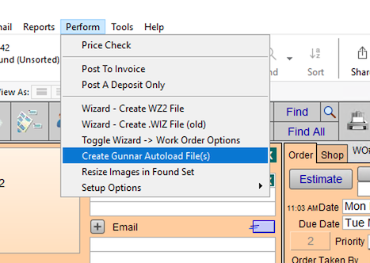
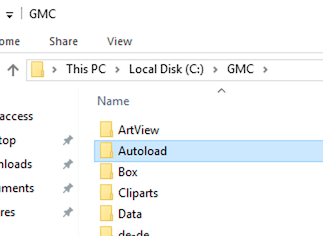
I know that you can pull your Title Box information into FrameReady from Gunnar Mat Designer, but is there any way that I can push Title Box information into Gunnar Mat Designer from FrameReady the opposite way? Can I enter a number into the Extra Openings field and then enter some text in the notes and have it generate a Title Box in Gunnar Mat Designer?
-
This feature is not supported in the FrameReady integration with Gunnar Mat Designer currently.
-
The only supported feature of Title Boxes is creating your design in Gunnar Mat Designer first with a title box, and then saving and using the “Pull” button in FrameReady Work Orders to pull in the title box information into the Frame Notes field and the Extra Openings field. Please refer to the FrameReady website online help section for Gunnar for more information on how to use this feature of the integration.
I am trying to use the “PULL” method of the Gunnar Mat Designer and FrameReady integration and I am getting an error pop up when pressing the PULL button. The error says that “You have not added a template record for this Gunnar Mat Designer template. Please add the template from the pricing button on the CMC pop up.”
-
This particular error is happening because there is no template record in your Gunnar pricing section for the template that you selected in Gunnar Mat Designer to bring into FrameReady. You will need to add a pricing template record for this particular Gunnar template into your Gunnar pricing table in FrameReady to create the link. This happens because Gunnar is always adding new templates, so the default templates that are included in FrameReady are not always up-to-date with what is in Gunnar Mat Designer. That is why we have given you the option to create your own templates in FrameReady.
First, just click the CMC button on the Work Order screen. Then click the View/Edit Pricing button to open up the Gunnar template pricing table. Once the table is open, click the Add template button. This will open a pop up window where you can enter the template details for the template that you need to create in FrameReady. In the Template Name field, enter the template code pre-pended by the text “Gunnar -” For example, “Gunnar - C010”. Then, in the Code field, simply enter the code “C010”. We recommend that you add a Description and set the Group for the template as well as set the price that you would like to use for the template cut as well.
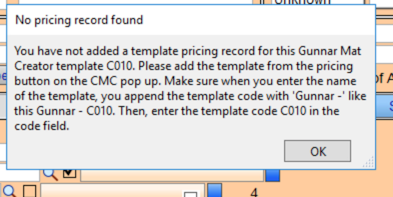
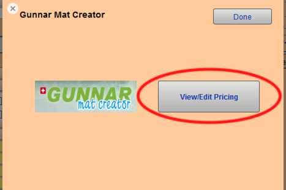
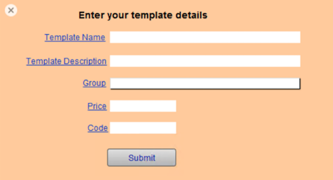
I am using the Gunnar integration option to create my design first in Gunnar Mat Designer and then push it into FrameReady using the “Pull” button in FrameReady Work Order. I have more than one opening in my Gunnar Mat Designer design. Will FrameReady account for the additional opening / openings?
-
Yes, FrameReady will account for the additional openings in your Gunnar Mat Designer design.
-
FrameReady uses an algorithm in the scripts that pull in the design information to calculate the full width and height of your openings based on where they are placed on the design. It will account for the extra opening in the opening width and height in the FrameReady Work Order as well as input the amount of extra openings on the design in the “Extra Openings” field on the Work Order.
© 2023 Adatasol, Inc.